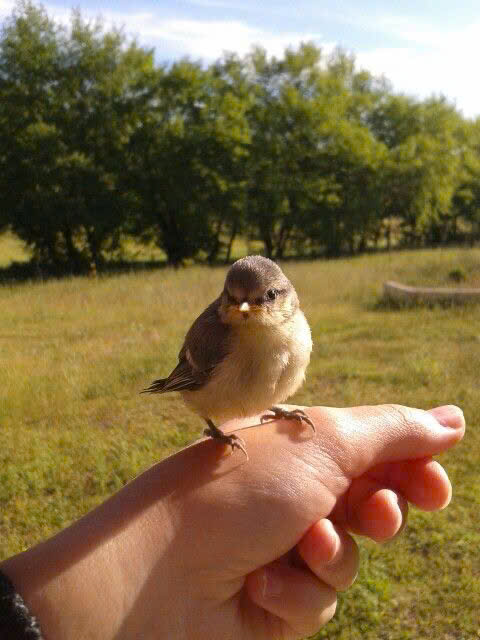

Mùa xuân gõ cửa, mang theo những tia nắng mật ngọt và làn gió mơn man qua từng kẽ lá.
Đây là lúc vạn vật rũ bỏ lớp áo cũ kỹ của mùa đông để khoác lên mình sắc xanh non của lộc biếc
và sắc hồng rạng rỡ của những đóa hoa. Hạnh phúc đôi khi chỉ là được hít hà mùi hương của đất trời lúc sang xuân,
thấy lòng mình nhẹ tênh và tràn đầy hy vọng mới.
Gió ngàn
Nhạc nhẹ (MP3)
Nắng sớm
Piano chill (MP3)
Đăng ngày 07/02/2026 • Mùa Hạ
Hạ về trong tiếng ve ngân
Khi những tia nắng bắt đầu trở nên vàng rực và gay gắt hơn, ta biết rằng mùa hạ đã thực sự gõ cửa. Đây là mùa của những vòm lá xanh thẫm, của tiếng ve râm ran gọi hè và của những cơn mưa rào bất chợt đến rồi đi nhanh chóng. Trong cái không khí oi ả của đất trời, hạnh phúc đôi khi chỉ đơn giản là tìm được một bóng râm mát rượi, thưởng thức một ly nước mát lạnh và để tâm hồn mình trôi lững lờ theo những đám mây trắng bồng bềnh trên bầu trời xanh thẳm. Hạ không chỉ là cái nắng cháy da thịt, mà còn là khoảng thời gian rực rỡ nhất để ta sống trọn vẹn với những nhiệt huyết của tuổi trẻ.

🍃 Gió Ngàn
☀️ Nắng Sớm
💕 Góc Yêu Thương
Nơi lưu giữu tình cảm chân thành.
Chuyện về đôi bàn tay và những mùa bình yên
Người ta thường hỏi nhau tình yêu chân thành có hình dáng như thế nào. Có người bảo nó rực rỡ như nắng hạ, có người lại nói nó nồng nàn như đóa hồng xuân. Nhưng với ông bà, tình yêu chân thành chỉ đơn giản là một sự hiện diện tĩnh lặng qua năm tháng.
Ông gặp bà vào một buổi chiều thu lá rụng đầy sân. Chẳng có lời thề non hẹn biển, họ cứ thế nắm tay nhau đi qua những ngày xanh trẻ. Tình yêu của họ không được đo bằng những món quà xa xỉ, mà bằng cách ông luôn để dành cho bà phần cơm ngon nhất, hay cách bà tỉ mẩn khâu lại chiếc áo sờn vai của ông.
Có một mùa đông buốt giá, khi bà đổ bệnh nằm trên giường, ông chẳng nói những lời hoa mỹ. Ông chỉ lặng lẽ dậy sớm, đun một ấm nước gừng ấm, rồi ngồi bên cạnh nắm chặt lấy bàn tay gầy guộc của bà. Cái hơi ấm từ bàn tay thô ráp của người đồng hành suốt mấy mươi năm ấy chính là liều thuốc kỳ diệu nhất. Bà bảo, chỉ cần cảm nhận được nhịp tim của ông qua kẽ tay, bà biết mình vẫn còn một chốn bình yên để trở về.
Khi tuổi già kéo đến như những vạt nắng xế chiều, họ vẫn ngồi bên hiên nhà, cùng nhau nghe tiếng ve ngân của mùa hạ hay ngắm những mầm non nhú lên lúc xuân sang. Tình yêu chân thành không phải là tìm được một người hoàn hảo để yêu, mà là khi ta nhìn thấy những điều không hoàn hảo của nhau nhưng vẫn chọn ở lại, chọn bao dung và chọn cùng nhau già đi.
💗 Lòng Thương Cảm
Thấu hiểu và chia sẻ.
Lòng thương cảm đôi khi chỉ là một khoảnh khắc dừng lại để thấu hiểu nỗi đau của một người lạ mà chẳng cần bất kỳ lý do nào. Trong một buổi chiều mưa tầm tã, một cậu bé đang đứng trú mưa dưới hiên cửa hàng thì thấy một cụ già bán vé số ướt đẫm, run rẩy nép vào một góc tường nhỏ hẹp. Thay vì chỉ đứng nhìn, cậu bé lặng lẽ bước tới, mở chiếc ô duy nhất của mình ra che cho cụ và nhẹ nhàng mua giúp vài tờ vé số cuối cùng bằng số tiền tiết kiệm ít ỏi. Cụ già ngước nhìn với đôi mắt nhòe lệ, cảm ơn không phải vì số tiền mà vì hơi ấm từ sự tử tế của một người không hề quen biết. Thương cảm không phải là sự ban ơn, mà là khi ta nhìn thấy chính mình trong nỗi khổ của người khác, để rồi sẵn lòng chìa tay ra vỗ về, giúp họ tin rằng thế gian này vẫn còn rất nhiều sự dịu dàng hiện hữu.
🌷 Sự Quý Mến
Những nhân duyên tốt đẹp.
Sự quý mến bắt nguồn từ những rung động giản đơn khi hai tâm hồn tìm thấy sự đồng điệu mà không cần đến những ràng buộc quá lớn lao. Có hai người bạn già cứ mỗi buổi chiều lại ra ngồi bên chiếc ghế gỗ quen thuộc dưới gốc đa đầu làng, chẳng cần nói với nhau quá nhiều, chỉ đơn giản là cùng nhau ngắm nhìn hoàng hôn rực rỡ và lắng nghe tiếng chim về tổ. Sự quý mến giữa họ được xây dựng từ những lần thấu hiểu thầm lặng, là khi một người biết người kia thích uống trà đậm vị sen, hay khi một người lặng lẽ nhường chỗ mát hơn cho bạn mình mà không một lời kể công. Đó là một loại tình cảm trong sáng và nhẹ nhàng như hương hoa nhài buổi sớm, không nồng cháy như tình yêu nhưng lại bền bỉ và sâu sắc, đủ để khiến cuộc đời mỗi người trở nên ấm áp hơn vì biết rằng giữa thế gian rộng lớn, vẫn luôn có một người chân thành trân trọng và mến mộ sự hiện diện của mình.
💬 Chia sẻ cảm xúc
10/02/2026
Admin: Chào mừng bạn đến với Góc Thư Giãn!
💬 Chia sẻ cảm xúc